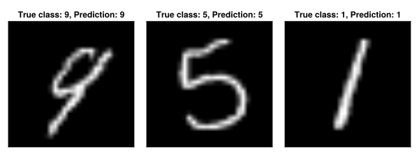

Image Classification with LBDN
Our next example features an LBDN trained to classify the MNIST dataset. We showed in Wang & Manchester (2023) that tuning the built-in Lipschitz bounds of LBDNs is an efficient way of designing neural networks that are robust to adversarial attacks. In this example, we will demonstrate how to train an LBDN model on the MNIST dataset with the following steps:
- Load the training and test data
- Define a Lipschitz-bounded model
- Define a loss function
- Train the model to minimise the loss function
- Evaluate the trained model
For details on how tuning the Lipschitz bound increases the model robustness, please see the paper.
1. Load the data
Let's start by loading the training and test data. MLDatasets.jl contains a number of common machine-learning datasets, including the MNIST dataset. To load the full dataset of 60,000 training images and 10,000 test images, one would run the following code.
using MLDatasets: MNIST
# Get MNIST training and test data
T = Float64
x_train, y_train = MNIST(T, split=:train)[:]
x_test, y_test = MNIST(T, split=:test)[:]For the purposes of this example, we'll load a small subset of the dataset.
using BSON
data = BSON.load("../../src/assets/lbdn-mnist/mnist_data.bson")
x_train, y_train = data["x_train"], data["y_train"]
x_test, y_test = data["x_test"], data["y_test"]
println("Train/test features: ", size(x_train), " / ", size(x_test))
println("Train/test labels: ", size(y_train), " / ", size(y_test))Train/test features: (28, 28, 1000) / (28, 28, 100)
Train/test labels: (1000,) / (100,)The feature matrices x_train and x_test are three-dimensional arrays where each 28x28 layer contains pixel data for a single handwritten number from 0 to 9. The labels y_train and y_test are vectors containing the classification of each image as a number from 0 to 9. We can convert each of these to an input/output format better suited to training with Flux.jl.
using Flux
using Flux: OneHotMatrix
# Reshape features for model input
x_train = Flux.flatten(x_train)
x_test = Flux.flatten(x_test)
# Encode categorical variables on output
y_train = Flux.onehotbatch(y_train, 0:9)
y_test = Flux.onehotbatch(y_test, 0:9)
println("Features: ", size(x_test))
println("Labels: ", size(y_test))Features: (784, 100)
Labels: (10, 100)Features are now stored in a Matrix where each column contains pixel data from a single image, and the labels have been converted to a OneHotMatrix where each column contains a 1 in the row corresponding to the image's classification (eg: row 3 for an image showing the number 2).
2. Define a model
We can now construct an LBDN model to train on the MNIST dataset. In our paper we use LBDN models with three hidden layers of (256, 356, 128) neurons (respectively) to achieve a classification accuracy of approximately 99% on the full MNIST dataset. For this example, we'll consider a smaller network and set a Lipschitz bound of γ = 5.0 to demonstrate the method.
using Random
using RobustNeuralNetworks
# Random seed for consistency
rng = MersenneTwister(42)
# Model specification
nu = 28*28 # Number of inputs (size of image)
ny = 10 # Number of outputs (possible classifications)
nh = fill(64,2) # 2 hidden layers, each with 64 neurons
γ = 5 # Lipschitz bound of 5.0
# Set up model: define parameters, then create model
model_ps = DenseLBDNParams{Float64}(nu, nh, ny, γ; rng=rng)
model = Chain(DiffLBDN(model_ps), Flux.softmax)
println(typeof(model))Flux.Chain{Tuple{DiffLBDN{Float64}, typeof(NNlib.softmax)}}The model contains a callable DiffLBDN model constructed from its direct parameterisation, which is defined by an instance of DenseLBDNParams (see the Package Overview for more detail). The output is converted to a probability distribution using a softmax layer. Note that all AbstractLBDN models can be combined with traditional neural network layers using Flux.Chain. An alternative approach would be to use SandwichFC layers to build the network.
3. Define a loss function
A typical loss function for training on datasets with discrete labels is the cross entropy loss. We can use the crossentropy loss function shipped with Flux.jl.
# Loss function
loss(model,x,y) = Flux.crossentropy(model(x), y)loss (generic function with 1 method)4. Train the model
Before training the model to minimise the cross entropy loss, we can set up a callback function to evaluate the model performance during training.
using Statistics
# Check test accuracy during training
compare(y::OneHotMatrix, ŷ) = maximum(ŷ, dims=1) .== maximum(y.*ŷ, dims=1)
accuracy(model, x, y::OneHotMatrix) = mean(compare(y, model(x)))
# Callback function to show results while training
function progress(model, iter)
train_loss = round(loss(model, x_train, y_train), digits=4)
test_acc = round(accuracy(model, x_test, y_test), digits=4)
@show iter train_loss test_acc
println()
endprogress (generic function with 1 method)Let's train the model over 600 epochs using two learning rates: 1e-3 for the first 300, and 1e-4 for the last 300. In both cases, we'll use the Adam optimiser and the default Flux.train! method. Once the model has been trained, we can save it for later with the BSON package.
using BSON
# Define hyperparameters and zip up data
num_epochs = 300
lrs = [1e-3, 1e-4]
data = [(x_train, y_train)]
# Train with the Adam optimiser, and display progress every 50 steps
for k in eachindex(lrs)
opt_state = Flux.setup(Adam(lrs[k]), model)
for i in 1:num_epochs
Flux.train!(loss, model, data, opt_state)
(i % 50 == 0) && progress(model, i)
end
end
# Save the model for later
bson("lbdn_mnist.bson", Dict("model" => model))Running the training loop can take a few minutes, so here's one we prepared earlier. The model was trained on the full MNIST dataset (60,000 training images, 10,000 test images).
model = BSON.load("../../src/assets/lbdn-mnist/lbdn_mnist.bson")["model"]
println(typeof(model))Flux.Chain{Tuple{DiffLBDN{Float64}, typeof(NNlib.softmax)}}5. Evaluate the trained model
Our final model has a test accuracy of about 99% on this small subset of the MNIST dataset. For those interested, it achieves 97.5% accuracy on the full 10,000-image test set. We could improve this further by (for example) using a larger model, training the model for longer, or fine-tuning the learning rate.
# Print final results
train_acc = accuracy(model, x_train, y_train)*100
test_acc = accuracy(model, x_test, y_test)*100
println("Training accuracy: $(round(train_acc,digits=2))%")
println("Test accuracy: $(round(test_acc,digits=2))%")Training accuracy: 98.4%
Test accuracy: 99.0%Let's have a look at some examples too.
using CairoMakie
# Make a couple of example plots
indx = rand(rng, 1:100, 3)
f1 = Figure(resolution = (800, 300))
for i in eachindex(indx)
# Get data and do prediction
x = x_test[:,indx[i]]
y = y_test[:,indx[i]]
ŷ = model(x)
# Reshape data for plotting
xmat = reshape(x, 28, 28)
yval = (0:9)[y][1]
ŷval = (0:9)[ŷ .== maximum(ŷ)][1]
# Plot results
ax, _ = image(
f1[1,i], xmat, axis=(
yreversed = true,
aspect = DataAspect(),
title = "True class: $(yval), Prediction: $(ŷval)"
)
)
# Format the plot
ax.xticksvisible = false
ax.yticksvisible = false
ax.xticklabelsvisible = false
ax.yticklabelsvisible = false
end
save("lbdn_mnist.svg", f1)CairoMakie.Screen{SVG}
